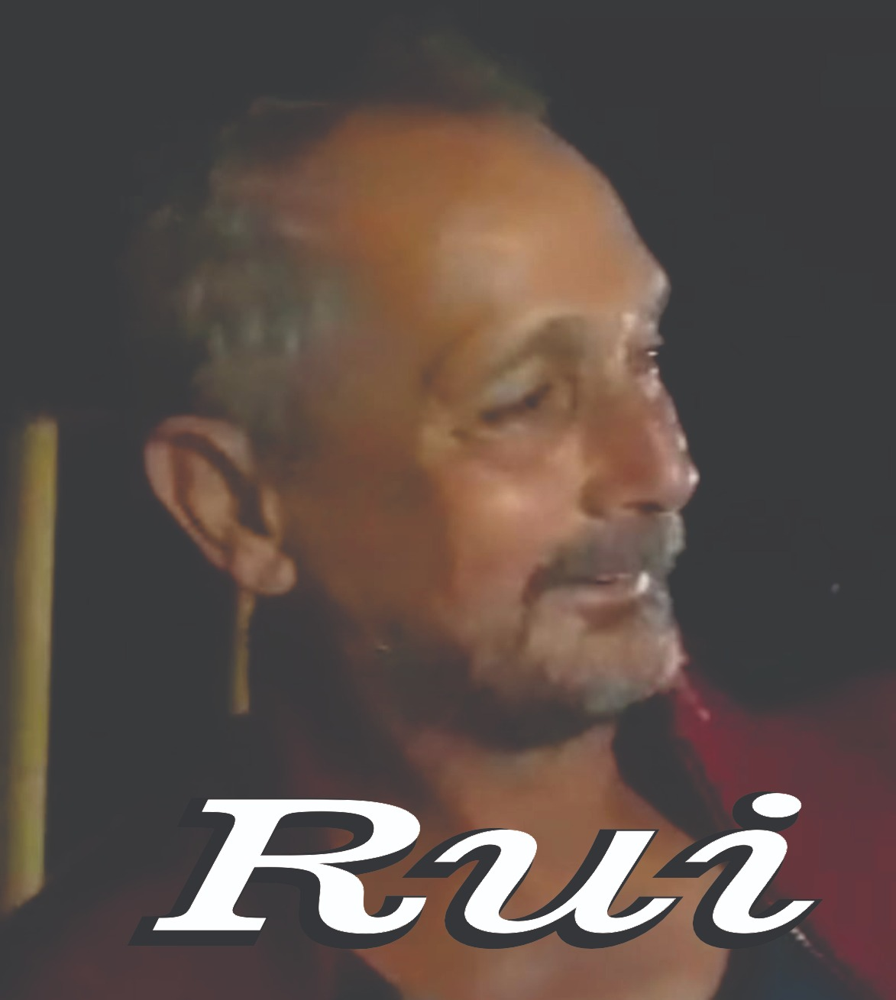

- Avó de quatro netos e uma neta;
- Diretora Escolar na EE São Tiago até se aposentar;
- Vice Diretora na EE Mendes de Oliveira;
- Professora dos anos iniciais;
- Graduada em História;
- Pós graduada;
- Professora de História por um período até assumir vice direção e depois direção.
Esposo
Filhas
/lourdes/mo.jpeg)
/lourdes/jo.jpeg)
/lourdes/di.jpeg)